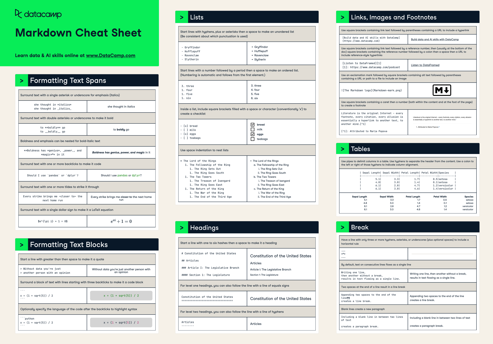

4 Getting Started with Jupyter Notebooks
In data science, we don’t just write code — we tell stories with data. Jupyter notebooks are an essential tool because they allow us to blend code, explanatory text, and visualizations in a single document. This makes it easier to understand, share, and reflect on your work.

Have you ever had to write a report, lab summary, or project write-up where you needed to show data, perform calculations, and explain your thinking? How did you do it? How easy was it to share your work or revise it later?
As you learn about Jupyter notebooks, keep that experience in mind. You’ll soon see how notebooks can transform that process.
4.1 Benefits:
Here are a few key reasons why Jupyter notebooks are so widely used and appreciated in the data science world:
- Blending code and context: Jupyter notebooks allow you to seamlessly combine executable Python code with rich text elements using Markdown. This means you can explain your thought process, document your workflow, and display results all in one place—making your analysis easier to follow and reproduce.
- Exploratory-friendly: Notebooks are designed for experimentation. You can write and run code in small, manageable chunks (cells), see immediate feedback, and iteratively refine your approach. This makes it easy to test ideas, debug, and learn as you go.
- Sharable and visual: Notebooks support inline visualizations, tables, and formatted text, making your work more engaging and accessible. You can easily export notebooks as HTML or PDF files to share with others, ensuring your analysis is both readable and reproducible.
Think of a notebook as your digital lab notebook. Instead of jumping between different tools to write your analysis, calculate results, and explain your thinking, a Jupyter notebook lets you do it all in one place—cleanly combining code, commentary, and visuals in a single, easy-to-follow narrative.
4.2 Notebook Anatomy and Core Features
As you read through this chapter, we encourage you to follow along using the companion notebook in Google Colab (or other editor of choice). This interactive notebook lets you run code examples covered in the chapter—and experiment with your own ideas.
👉 Open the Jupyter Basics Notebook in Colab.
Code vs Markdown Cells
Jupyter notebooks are made up of cells, and there are two main types you’ll use regularly: code cells and Markdown cells.
- Code cells are where you write and run Python code. When executed, these cells display output directly beneath the cell—whether it’s a simple calculation, a table, or a visualization.
- Markdown cells allow you to format text to explain your work, provide instructions, insert images, or even write mathematical formulas. These cells support formatting tools like headers, bullet points, bold/italic text, and LaTeX for equations.
By combining these two types of cells, you can create a clear, readable narrative that both documents your process and shows your results.
Watch from 5:20-8:45 in this video to see simple examples of code cells and Markdown cells.
To select the type of a cell (Code or Markdown), use the dropdown menu typically found at the top of the notebook interface. In Jupyter Lab or classic Jupyter Notebook, it will say ‘Code’ or ‘Markdown’—click it to change. In VS Code, you can right-click a cell and choose the type, or use shortcuts like Cmd+M M (Markdown) and Cmd+M Y (Code) on Mac (Ctrl+M equivalents on Windows).
To run a cell: Shift + Enter
Knowledge check
Markdown Basics
There’s a lot you can do with Markdown to make your notebooks clearer and more engaging. You can add headings, lists, formatting, and even mathematical expressions to help document your analysis and guide readers through your work.
Here are a few basics to get you started but check out the cheat sheet below to see more:
- Headers: Use
#,##,###to create headings of different sizes - Bold and Italic:
**bold**,*italic* - Lists:
- itemfor bullet points or1. itemfor numbered lists - Equations: Use LaTeX syntax between dollar signs, like
$a^2 + b^2 = c^2$

Want to go deeper? You can explore more Markdown syntax in these helpful guides:
- Jupyter Docs on Markdown: A quick and easy introduction to get you started with basic Markdown syntax.
- Markdown Guide: A more detailed reference for adding more structure and polish to your notebook explanations.
- Colab Markdown Guide notebook: An example Colab notebook that allows you to experiment directly with Markdown syntax - a great playground for practicing different Markdown elements in a live notebook environment.
Knowledge check
Code Execution & State
One of the key features of Jupyter notebooks is that they allow you to execute code one cell at a time. This supports experimentation, but also introduces some complexity.
- Code is executed in the order you run the cells, not necessarily from top to bottom. This means you can define a variable in one cell and use it later—even if that later cell is above the original one. While this can be convenient, it can also lead to confusion or bugs if you’re not careful.
- In one code cell, type:
x = 42 - Now scroll up and create a new code cell above that one.
- In that new cell, type:
print(x)and run it.
It will work—because the variable x was already defined in memory. But if someone runs the notebook from top to bottom, it will break. This illustrates why executing cells out of order can lead to unpredictable behavior.
- The notebook maintains a running memory called the kernel. As long as the kernel is active, all the variables and functions you’ve defined persist in memory. This makes it easy to build on previous work, but if you make a mistake or want a clean slate, you may need to restart the kernel.
A good habit is to periodically restart the kernel and run all cells in order to ensure your notebook works as expected from top to bottom.
Managing Your Notebook
Working in Jupyter notebooks involves managing both your work and the underlying system that runs it. Here are a few key features and best practices to help keep things running smoothly:
Save often: Notebooks autosave regularly, especially when working in a browser-based environment like Jupyter Lab or Colab. However, it’s still a good habit to manually save using
Ctrl+SorCmd+S, especially before running all cells or restarting the kernel.Restarting the Kernel: If your notebook starts behaving unpredictably—due to memory overload, undefined variables, or bugs—it’s a good idea to restart the kernel. Restarting wipes the slate clean by clearing all variables from memory, allowing you to re-run the notebook from the top.
Clear Outputs: Before sharing your notebook with others or submitting it for review, consider clearing all outputs (cell results, print statements, plots, etc.). This makes your notebook easier to read and ensures the reader sees only the final results when they run it themselves. You can usually do this via the
KernelorEditmenu.
Again, can’t highlight this enough, a good practice is to “Restart and Run All” to make sure your notebook runs cleanly from start to finish without relying on any hidden state or cell order.
4.3 When Not to Use Notebooks
Notebooks are powerful and flexible, but they aren’t the best fit for every type of task—especially as your work becomes more complex or transitions into production environments.
Limitations:
- Hard to modularize and test: Notebooks encourage an exploratory, linear style of development. But when you need reusable functions, testable components, or well-structured projects, notebooks can become unwieldy.
- Poor version control: While tools like Git work well with text files, notebooks save code and output together in JSON format. This makes it difficult to track changes or resolve merge conflicts. This is improving but is still less than stellar.
- Execution order issues: Since notebooks allow you to run cells out of order, it’s easy to accidentally create dependencies that break when someone else (or you later) tries to run the notebook top to bottom.
When Notebooks Shine
Jupyter notebooks truly excel in scenarios where exploration, explanation, and communication are key. Here are a few situations where notebooks are particularly well-suited:
- Learning and teaching: The ability to mix code, narrative, and output in one place makes notebooks an ideal format for both instruction and self-study.
- Exploratory data analysis (EDA): Notebooks allow you to quickly test hypotheses, visualize data, and keep track of your insights along the way.
- Prototyping and trying out ideas: Need to test a small function or compare two approaches? Notebooks provide a fast and flexible way to experiment.
- Creating interactive reports and visualizations: With support for charts, tables, and even interactive widgets, notebooks are a powerful medium for communicating data-driven stories.
When to Use Something Else
While notebooks are fantastic for interactive work, they aren’t ideal when software engineering discipline and scalability are required. Here are scenarios where other tools—like .py scripts, IDEs, or structured repositories—are often a better choice:
- Building and deploying production applications: Applications that need to be deployed on servers or integrated with other systems require a more modular and structured codebase than notebooks typically provide.
- Creating libraries, APIs, or packages: These projects need reusable components, proper documentation, and automated testing, which are easier to maintain outside of notebooks.
- Collaborating with others using complex Git workflows: Notebooks don’t lend themselves well to detailed version control, especially with branching and merging.
- Developing software that requires extensive testing or CI/CD pipelines: Production-grade software often relies on unit testing, linting, and automated builds, which are best handled in traditional
.pyenvironments.
If you don’t yet know what all the bullet points above mean — like Git, APIs, CI/CD, or modular code — that’s completely fine. You’ll encounter these concepts as you progress in your data science journey. For now, just understand that as projects get more complex and move closer to production, notebooks often aren’t the best tool for the job.
4.4 Using .py Files in Notebooks
Mixing .py scripts with notebooks is common in real-world workflows, especially as your projects grow in complexity or require reusable functions. Instead of writing everything directly in a notebook, you can keep your reusable logic—like data cleaning functions, utility tools, or modeling pipelines—in a .py script and then import or run that script from within your notebook.
This approach offers several benefits: you avoid cluttering your notebook with repeated code, you can test pieces of logic more easily, and your codebase becomes easier to maintain and share.
Methods:
There are a few different ways to work with .py files inside your notebook, each useful in different situations:
%run your_script.py– This runs the entire Python script as if you had pasted the code into the notebook. Any variables, functions, or classes defined in that script will be available in your notebook’s environment after execution.%load your_script.py– This loads the contents of the script into a new notebook cell so you can review or edit it before running. It’s a nice way to examine the code without opening another file.import your_script– This is the standard Python approach for using modules. If your script is in the same directory as your notebook, you can import functions or variables from it using this command. For example, if your script has a function calledclean_data(), you could use it in your notebook withyour_script.clean_data(). Don’t worry if this is new—we’ll cover imports and module structure later in the class.
Why use .py files?
Organizing your code into .py files offers several advantages, especially as your projects grow beyond a single notebook:
- Reusability: Functions or logic stored in a
.pyfile can be reused across multiple notebooks or scripts without duplication. - Organization: Separating logic from analysis helps keep your notebooks clean and focused on storytelling, while your
.pyfiles house the supporting code. - Version control: Unlike notebooks,
.pyfiles are plain text and work much better with Git and other version control tools—making it easier to track changes, review code, and collaborate with others.
Knowledge check
4.5 Best Practices and Pro Tips
Following a few best practices can make your Jupyter notebooks more readable, reliable, and professional—both for yourself and others who use your work.
- Name files clearly: Use descriptive and consistent naming conventions for your notebooks. For example,
eda_customer_data.ipynbis much more informative thanuntitled3.ipynb. - Use Markdown generously: Narrate your thought process. Include headers, bullet points, and equations to guide the reader through your analysis. Also, take time to format your writing as you would for any professional report—pay attention to grammar, clarity, and structure to ensure your notebook is polished and easy to follow.
- Restart and clear output before sharing: This ensures the notebook runs top-to-bottom and that readers aren’t confused by leftover output or state.
- Export as HTML or PDF: If you’re turning in a notebook or sharing it for review, exporting to a static format can ensure others see exactly what you intended.
Structure your notebook like a story—introduce the goal, describe your approach, show the results, and summarize your findings. Your future self will thank you!
Here’s a great article that walks through best practices to help you make this a reality.
Want to Learn More?
Here are a few helpful references that expand on Jupyter notebook best practices:
4.6 6. Summary and What’s Next
Let’s recap what you’ve learned in this chapter:
- Jupyter notebooks are an essential tool for blending code, narrative, and output in one place.
- You now know how to use different cell types, write Markdown, and execute code.
- You’ve seen how notebooks maintain memory with the kernel and why it’s important to restart and re-run code in order.
- We covered notebook limitations and when it’s better to switch to
.pyscripts or more robust development tools. - You explored how to organize your code using
.pyfiles and how to run them inside your notebooks. - Finally, you picked up several best practices for writing professional and readable notebooks.
Next Up:
In the next chapter, we’ll dive into Python’s basic data structures—like lists and dictionaries. These tools are essential for organizing and manipulating data efficiently, and they will serve as the foundation for the rest of your data analysis journey.